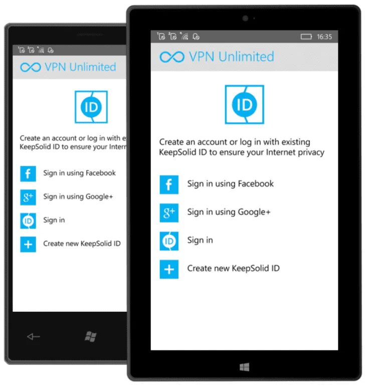

适用于 Windows Phone 的 VPN
流媒体设备设置
Windows Phone
优势:
- 安全数据加密
- 可在您的设备上轻松使用
- 访问全球 3000 台服务器
- 30 天退款保证

适用于 Windows Phone 的 VPN
使用 VPN Unlimited 保护 Windows Phone 上的流量，隐藏 IP 地址，并在几秒钟内连接到私密 VPN 服务器。
在其他平台获取 VPN Unlimited
下载适用于其他平台和 Windows 的 VPN 应用。快速、安全、无限制！
7天免费试用30天退款保证